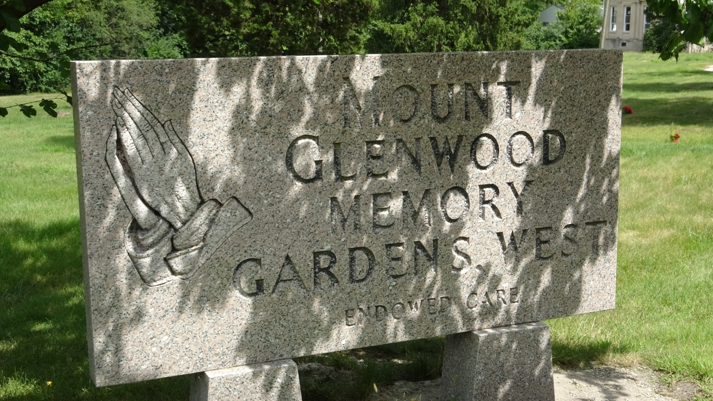

Mount Glenwood Cemetery

Mount Glenwood Memory Gardens West is located in Willow Springs, Illinois, seventeen miles southwest of Chicago’s Loop. Over five Blues musicians are buried here including Tampa Red. Mount Glenwood’s address is 8301 Kean Avenue, Willow Springs, Illinois, 60480.